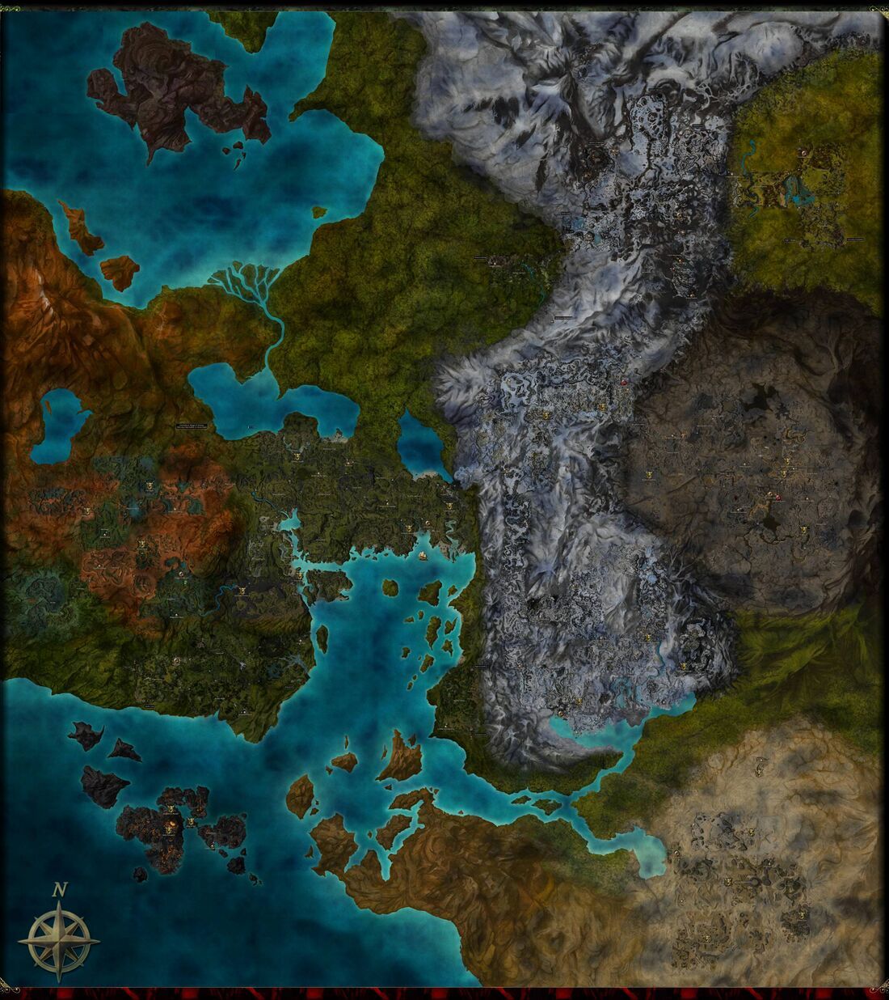

1. Step-by-Step Beginner Walkthrough
Start here: 52 exact sequential actions from character creation through Pre-Searing Devona, Post-Searing Ghost of Althea, Lion's Arch power spike, 7-Hero Beginner Team, and Endgame Mesmerway.
Guild Wars Reforged (the 2025–2026 modernized edition of classic Guild Wars by ArenaNet and 2weeks) unites the three standalone campaigns (Prophecies, Factions, and Nightfall) with native controller support, refreshed UI clarity, and the new Reforged Mode leveling and Hero experience. Because jumping cold into 20 years of layered towns, builds, and mechanics feels intimidating, this guide revolves around a strict zero-guesswork 52-step Beginner Walkthrough backed by verified player builds, Hero team templates, campaign checklists, and cutoff warnings.
| Property | Details |
|---|---|
| Title | Guild Wars Reforged (not Guild Wars 2) |
| Developers | ArenaNet & 2weeks |
| Release Window | December 3, 2025 Launch + 2026 Reforged Mode & Skill Updates |
| Platforms | PC (Windows / Steam), Steam Deck Verified, XInput Gamepad |
| Campaigns Included | Prophecies, Factions, Nightfall (+ optional Eye of the North DLC & Bonus Mission Pack) |
| Level & Attribute Caps | Level 20 Max (170 leveling Attribute Points + 30 from two native +15 quests = 200 Total) |
| Max Party Size | 2 (Pre-Searing) → 4 (Ascalon) → 6 (Shiverpeaks/Kryta) → 8 (Midgame/Endgame) |

Start here: 52 exact sequential actions from character creation through Pre-Searing Devona, Post-Searing Ghost of Althea, Lion's Arch power spike, 7-Hero Beginner Team, and Endgame Mesmerway.
Twelve high-impact combat and economy habits: compass aggro bubbles, longbow slot F2 pulling, healer target calling, identifying drops, and Xunlai bank discipline.
Reforged Mode vs Classic vs Dhuum/Melandru rules, Attribute point cost math (1–12), AL armor hit-location scaling, earliest Max Armor crafters, 40/40 sets, and Signet of Capture.
Staged Elementalist progression (Level 1 to Hard Mode Invoke Lightning & Soul Ignition) plus verified PvX Endgame bars and template codes for all other 9 professions.
Exact trainer shopping routes for the zero-elite 7-Hero Beginner Team, complete 7-Hero Offensive Mesmerway transition (using Ghost of Althea), and Boss Capture table.
Complete chronological checklists with bonus tips across Prophecies (1–25), Factions (1–12), Nightfall (1–17), Eye of the North, and all native +15 Attribute Quests.
Pre-Searing Ascalon Academy cutoff, Town Crier and Across the Wall bugs, Forsaken Tunnels lock trigger, Gwen's Tapestry Shred, Nightfall Hero forks, and Beyond spawn toggles.
Weekly Nicholas the Traveler Gifts, Daily Zaishen Coins, Jaga Moraine Vaettirs, Riven Earth Raptors, Jaya Bluffs Feathers, Kilroy safe Survivor XP, and Glint's Hero armor.
Direct verification ledger covering Guild Wars Official Wiki, PvXwiki, ArenaNet / 2weeks Reforged notes, GFDL map attributions, and compressed local icon/map/screen directories.